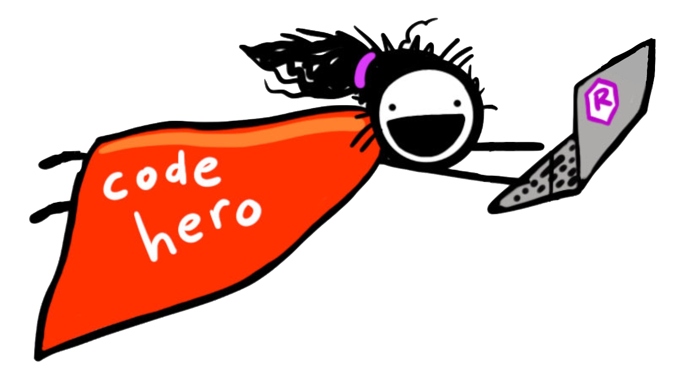

Computational Toolkit for Educational Scientists

Foreword
I am putting this out there primarily as a resource for my own students to help them through the installation and provide written instruction for the computational tools we use in the courses I teach. As such, I will initially focus on R and RStudio, but I will probably add tools (e.g., reference managers, github, make) over time as I have time. (Note: If you want to contribute to this, create a Pull Request or send me an email.) Also, feel free to offer criticism, suggestion, and feedback. You can either open an issue on the book’s github page or send me an email directly.
Colophon
Artwork by @allison_horst
Icon and note ideas and prototypes by Desirée De Leon.
The book is typeset using Crimson Text for the body font, Raleway for the headings and Sue Ellen Francisco for the title. The color palette was generated using coolors.co.
Statistical Computing
- Laptop icon made by Tomas Knop from www.flaticon.com
- Directory icon made by Darius Dan from www.flaticon.com
- Brain icon made by Aranagraphics from www.flaticon.com
- Internet icon made by Freepik from www.flaticon.com
License

This work is licensed under a Creative Commons Attribution-ShareAlike 4.0 International License.